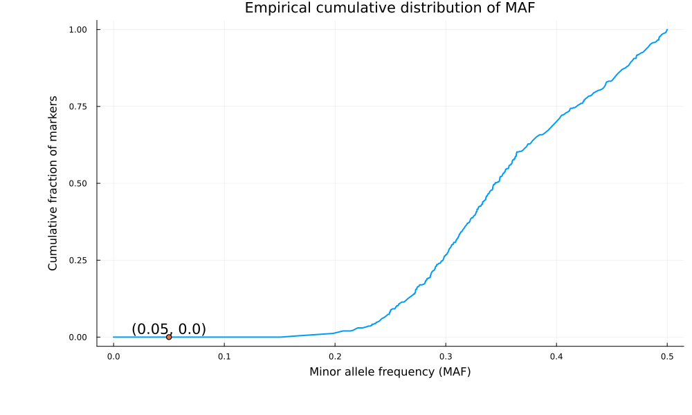
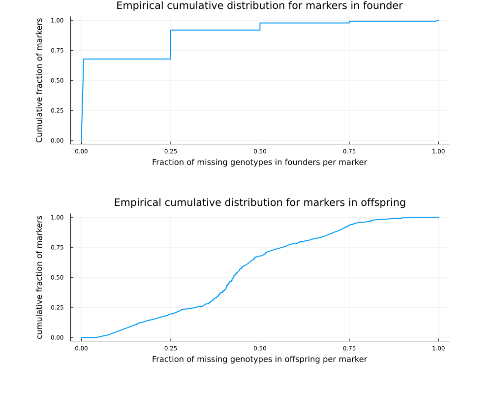
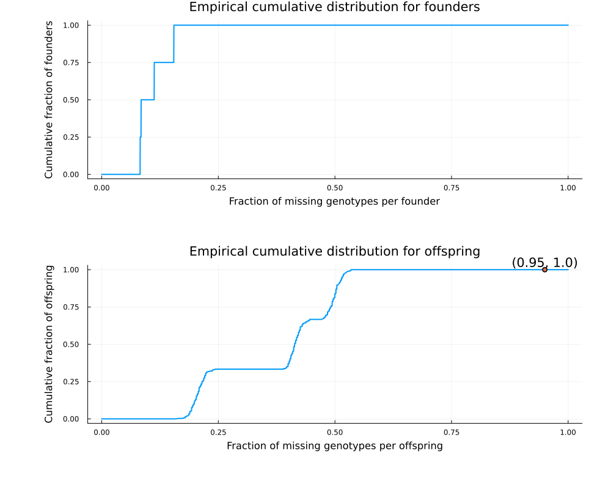
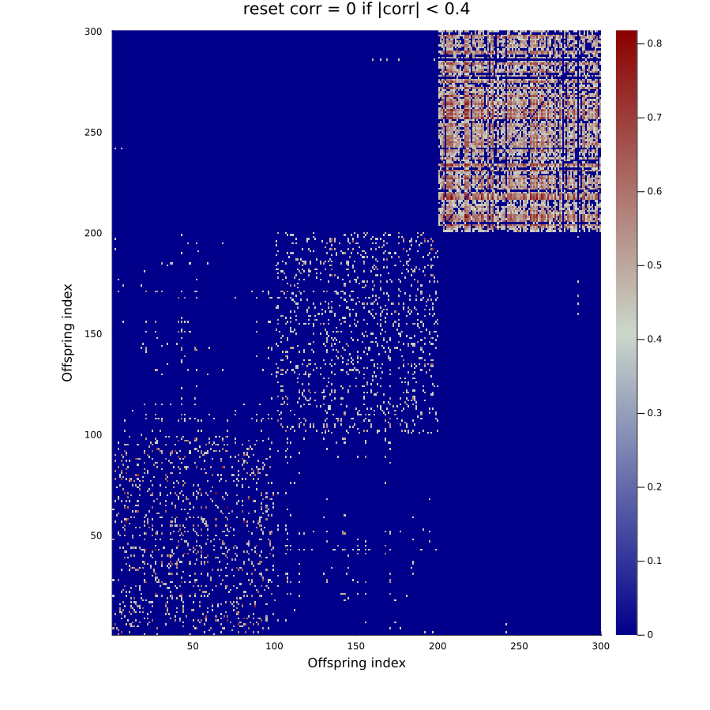

S2 MagicFilter
Data filtering
It is recommended to first run MagicBase.vcffilter for fast online marker filtering.
The magicfilter sequentially performs the following:
- Filter for subpopulations with size >=
min_subpop. By default,min_subpop=1(i.e. not performed). - Remove founders (and their offspring) if their numbers of progeny <
min_nprogeny. By default,min_nprogeny=1(i.e., not performed). - Test monomorphic for each subpopulation at each marker.
- Filter for markers with
snp_missfilter(f,o)for founder missing fractionfand offspring missing fractiono. - Filter for markers with minor allele frequency <=
snp_minmaf. - Filter for offspring with missing fraction <=
offspring_maxmiss. - Remove duplicated offspring (
isfilterdupe = true) by keeping one of them with the least missing values; a pair of offspring are duplicated if their allelic correlation >=offspring_maxcorr.
# code for Julia
using MagicFilter
cd(@__DIR__)
genofile = outstem*"_magicsimulate_geno.vcf.gz"
pedfile = outstem*"_magicsimulate_ped.csv"
magicfilter(genofile,pedfile;
snp_minmaf = 0.05,
snp_missfilter = (f,o) -> o <= 0.9 || f <= 0.1,
offspring_maxmiss = 0.95,
isfilterdupe = true, # default false
outstem
)# code for Linux shell.
# For Window CMD, replace multiline key \ by ^, and replace comment-key # by ::
# For CLI, snp_missfilter = (f,o) -> o <= snp_maxomiss || f <= or_snp_maxfmiss
julia rabbit_magicfilter.jl -g example_magicsimulate_geno.vcf.gz \
-p example_magicsimulate_ped.csv \
--snp_minmaf 0.05 --snp_mono2miss true \
--snp_maxomiss 0.9 \
--or_snp_maxfmiss 0.1 \
--offspring_maxmiss 0.95 \
--isfilterdupe true \
-o exampleOutput files
| outfile | Description |
|---|---|
| outstem*"_magicfilter.log" | log file |
| outstem*"_magicfilter_geno.vcf.gz" | filtered genofile for downstream analysis |
| outstem*"_magicfilter_ped.csv" | filtered pedfile for downstream analysis |
| outstem*"_magicfilter_ped.png" | plot for filtered pedfile |
| outstem*"_magicfiler_subpop_size.csv" | size of each subpopulation |
| outstem*"_magicfiler_subpop_size.png" | plot distribution of subpopulation size |
| outstem*"_magicfiler_founder_nprogeny.csv" | number of progeny for each founder |
| outstem*"_magicfiler_founder_change.csv" | changes in founder genotypes |
| outstem*"_magicfiler_ind_missing.csv" | missing fraction for founders and offspring |
| outstem*"_magicfiler_ind_missing.png" | plot distribution of missing fraction among individuals |
| outstem*"_magicfiler_snp_sum.csv" | summary of monomorphic test |
| outstem*"_magicfiler_snp_MAF.png" | plot distribution of MAF |
| outstem*"_magicfiler_snp_missing.png" | plot distribution of missing fraction among markers |
Output: empirical CDF of MAF
outstem*"_magicfilter_snp_MAF.png" plots the empirical cumulative distribution function (CDF) of MAF per marker. See outstem*"_magicfilter_snp_sum.csv" for the exact results. The MAF is calculated among offspring for each marker. The red dot indicates the fraction of removed markers for the given threshold snp_minmaf = 0.05.

Output: empirical CDF of missing fraction per marker
outstem*"_magicfilter_snp_missing.png" plots the empirical CDF of missing fraction per marker for founders and offspring, respectively. See outstem*"_magicfilter_snp_sum.csv" for the exact results.

Output: empirical CDF of missing fraction per individual
outstem*"_magicfilter_ind_missing.png" plots the empirical CDF of missing fraction per individual. See outstem*"_magicfilter_ind_missing.csv" for the exact results. The red dot indicates 1 - fraction of removed markers for the given threshold offspring_maxmiss.

Output: offspring duplicate
outstem*"_magicfilter_ind_correlation.png" gives the heatmap of allelic correlation for each pair of offspring. A pair of offspring is assumed to be duplicated if their correlation > offspring_maxmiss. By default, offspring_maxmiss = 0.99. These output files are produced only if isfilterdupe = true.
